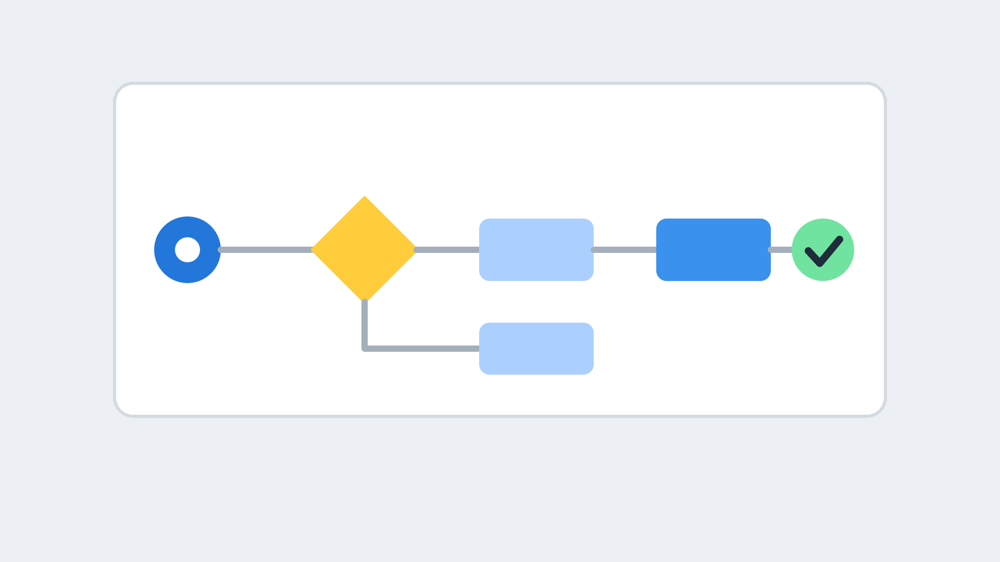
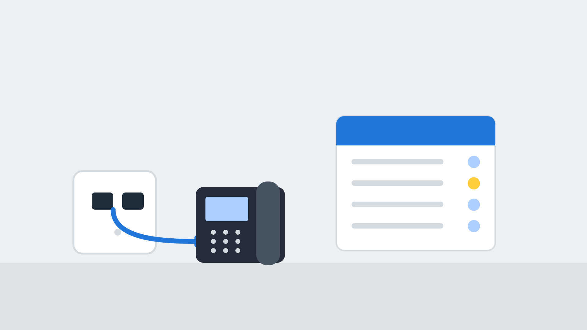

8x8 Contact Centre
Serve customers on every channel from one screen, with routing, quality tools, planning and AI built in.
A complete cloud contact centre on one platform
8x8 puts your contact centre on the same platform as your phones, meetings and chat. Agents work in one screen, supervisors see everything live, and managers get the quality and planning tools to run a team well.
- Voice, chat, email, SMS, video and messaging apps in one agent view
- Skills-based and CRM-based routing, IVR and queued callback
- Real-time wallboards, quality scoring and workforce planning
- AI to guide agents, summarise calls and handle simple requests

Meet customers wherever they are
8x8 describes a single platform that brings every channel into one interface.
Voice
Inbound and outbound calls with routing, recording and queues.
Web chat
Chat from your website, with transfers and a switch to voice or video.
Email handled alongside calls and chats in the same queues.
SMS and messaging apps
SMS and messaging channels such as WhatsApp, Facebook Messenger, Viber and RCS.
Video and co-browsing
Video support and co-browsing to move customers to the best channel.
Social
Social media enquiries brought in through supported integrations.
Agents can handle several interactions at once, with 8x8 stating up to 13 across channels.
Get every customer to the right agent first time
Routing decides who answers each contact. The right set-up reduces transfers, shortens waits and keeps customers away from queues they do not need to be in.
- Automatic call distribution (ACD) and queues
- Skills-based routing, plus routing based on CRM data
- Intelligent routing using details such as caller ID and reason for contact
- Standard and intelligent IVR, with a builder for custom call paths
- Queued callback so customers keep their place without waiting on the line
- Multilingual support for mixed audiences

8x8 agent desktop and CRM integration
One desktop
Calls, chats, emails and messages in one omnichannel screen, so agents do not hunt between tools.
CRM screen pop
Customer details appear as a contact arrives, with calls logged against the record. Works with Salesforce, Dynamics, NetSuite and Zendesk.
Collaboration
Agents can message, call or video colleagues and experts without leaving the contact.
Agent assist
AI offers real-time guidance, dynamic scripting, sentiment insight and automatic call summaries.
Work from anywhere
Use an IP phone, a computer or a mobile app, so home and hybrid agents get the same tools.
Secure payments
PCI-compliant payment handling lets agents take card payments without hearing or storing card details.
8x8 predictive dialler for sales and campaigns
An auto dialler helps outbound teams make more conversations from the same number of agents.
- Predictive, progressive and preview dialling modes
- Calls placed from a contact list and connected calls routed to the next free agent
- Campaign reporting alongside your inbound statistics

A live view of every queue and every agent
Real-time monitoring
Watch queues and agent status live, and react before service levels slip.
Wallboards and dashboards
Customisable wallboards and dashboards put the numbers that matter in front of the whole team.
Listen, whisper and barge
Supervisors can listen in, coach an agent privately or join a call when needed.
Supervise on the go
A mobile supervisor app keeps managers connected away from the desk.
Reports
Template and customisable reports on history, exportable in several formats, with API access to live and historic data.
Customer journey analytics
See what happens across a customer's contacts, not just a single call.
Raise quality and plan the right team
Quality and workforce tools turn contact centre data into better coaching and better rotas. 8x8 states that workforce management is now included in its contact centre packages, so check the current terms when you choose.
- Agent scoring, plus call and screen recording
- AI scoring of eligible interactions, so quality checks cover far more than a small sample
- Forecasting and scheduling to match staff to demand
- Holiday planning and shift patterns
- Adherence and historic data to learn from past demand
Understand every conversation, and automate the easy ones
Conversation analytics
Capture every conversation to spot trends, understand sentiment, coach agents and support compliance.
Speech analytics
Search and analyse what is said, not just who called.
Virtual agent
An intelligent customer assistant offers voice and digital self-service, so routine requests are handled around the clock.
AI-powered IVR
Let callers say what they need instead of pressing through menus.
Sentiment insight
Spot frustrated customers early and guide agents in the moment.
Open APIs
Pull live and historic data into your own dashboards or connect other systems.
AI features are described by 8x8 and depend on package and configuration. We confirm what is included in your quote.
8x8, 3CX or a larger platform?
Contact centre needs range from a small queue to a large multi-channel operation.
| Option | Best for | Highlights |
|---|---|---|
| 3CX built-in | Smaller teams | Queues, wallboard, recording and reports included with the phone system |
| 8x8 contact centre | Growing and mid-size teams that want omnichannel, quality and workforce tools | Omnichannel, quality management, workforce management, analytics and AI |
| Avaya and others | Large or complex operations | Tailored design and integration for demanding requirements |
Built to scale and stay up
Scales with demand
A cloud design adds capacity as demand rises, so busy periods do not need extra hardware.
Reliable
8x8 states a 99.999% uptime SLA across its platform. Security and reliability
UK-aware
Recordings and data handling can be discussed against your compliance needs. Tell us your requirements and we will confirm.
How a contact centre project works
Plan
We review contact volumes, channels, opening hours and the systems you use.
Design
We design queues, IVR menus and routing rules with your team.
Build and connect
We configure the platform and link your CRM and other tools.
Train and go live
We train agents and supervisors, then support the launch and tune reports.
8x8 contact centre FAQs
Which channels does the 8x8 contact centre support?
Voice, web chat, email, SMS and messaging channels such as WhatsApp, Facebook Messenger, Viber and RCS, plus video, in a single agent interface.
Can agents work from home?
Yes. Agents can use a computer, an IP phone or a mobile app, so home and hybrid agents get the same tools as the office.
Does it integrate with our CRM?
Yes. It integrates with Salesforce, Dynamics, NetSuite and Zendesk, and open APIs cover others. See integrations.
What is the difference between quality management and workforce management?
Quality management scores and reviews interactions to improve how agents handle customers. Workforce management forecasts demand and schedules staff to meet it.
Can it make outbound calls?
Yes. An auto dialler supports predictive, progressive and preview modes for campaigns.
When would 3CX be a better fit?
For smaller teams that mainly need queues, wallboards and recording, the contact centre tools in 3CX may be enough. See 3CX AI and analytics.
More about 8x8
8x8 cloud phone systems
The overview: what 8x8 is, how it compares with 3CX and how a project works.
Read more →Voice and messaging
A cloud business phone system with team messaging, on desktop, mobile and browser.
Read more →Video meetings
HD meetings that guests join from a browser, with screen sharing, recording and calendar links.
Read more →Talk to us about 8x8
Tell us about your team, channels and call volumes and we will recommend an 8x8 contact centre set-up.